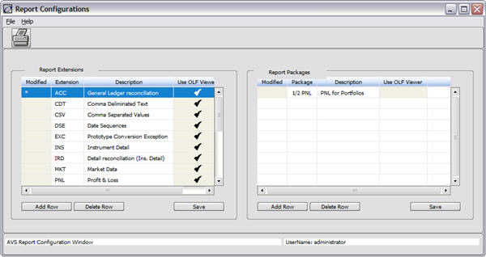

REPORT VIEW/CONFIGURATION - AVS REPORT CONFIGURATIONS
Overview
The AVS Report Configurations window enables the user to create categories for existing reports. This allows the user to access groups of related reports quickly. The window consists of two panels. Each panel contains its own functionality that is independent of the other.
Accessing This Window/Screen
To access this window:
- Start the Operations Manager.
- The Daily Operations tab displays.
- Click on the Report Viewer icon.
- The Report Viewer window displays.
- Select Config à Report Configuration.
The following window displays:

Menu Items
This window contains the following menu items:
|
Menu |
Item |
Description |
|
File |
Save All |
Saves all modifications made to both the Report Extension and/or the Report Packages tables. |
|
|
Save Extensions |
Saves any modifications made to the Report Extension table. |
|
|
Save Packages |
Saves any modifications made to the Report Packages table. |
|
|
Exit |
Exits the AVS Report Configuration window. |
|
Help |
Help |
Provides information about the AVS Report Configuration window. |
Buttons
This window contains the following buttons:
|
Button |
Description |
|
|
Prints the current window. |
|
Add Row |
If this button is used in the Report Extensions panel, adds a row to the bottom of the Report Extensions table. If this button is used in the Report Packages panel, adds a row to the bottom of the Report Packages table. |
|
Delete Row |
If this button is used in the Report Extensions panel, deletes the selected row from the Report Extensions table after user confirmation. If this button is used in the Report Packages panel, deletes the selected row from the Report Packages table after user confirmation. |
|
Save |
If this button is used in either the Report Configuration or the Report Packages panel, saves the modifications to the table. It performs the same function as File à Save Extensions or File à Save Packages. |
Fields
This window contains the following fields:
Report Extensions
|
Field |
Description |
|
Modified |
This field cannot be modified. When a row is added or a field is edited, an asterisk displays in this field. This indicates that a change has been made to the record and should be saved pressing the Save button. |
|
Extension |
This field represents a file extension that identifies the type of information contained in the report. It is a three-character field. This extension displays in the Extension listing in the Report Viewer window. Each extension must be unique. |
|
Description |
This is a variable character field describing the file extension in the Report Extensions table, or the package in the Report Packages table. The description displays in either the Report Type listing or the Report Package listing in the Report Viewer window. |
|
Use OLF Viewer |
A check box to indicate if the OLF Viewer should be used for this report type. This is only in V8.0r1 and up. |
Report Packages
|
Field |
Description |
|
Modified |
This field cannot be modified. When a row is added or a field is edited, an asterisk displays in this field. This indicates that a change has been made to the record and should be saved pressing the Save button. |
|
Extension |
This field represents a file extension that identifies the type of information contained in the report. It is a three-character field. This extension displays in the Extension listing in the Report Viewer window. Each extension must be unique. |
|
Package |
This field represents a report grouping. Existing, related reports can be grouped together into these packages that the user creates, modifies, or deletes. Text and wild card characters may be used in the field. Each package name must be unique to the system. |
Report Extensions Panel
Every time a report in the system is created, it is saved with a particular file extension that identifies the type of information contained in the report.
Below is a list of typical file formats (since these formats are configurable by client site they may be different for each site.):
|
File Extension |
Report Type |
|
EXC |
Prototype Conversion Exception |
|
PNL |
Profit & Loss |
|
ACC |
General Ledger Reconciliation |
|
MKT |
Market Data |
|
PMX |
Pricing Matrix |
|
RST |
Reset Information |
|
SNS |
Sensitivity Reports |
|
STT |
Settlement Information |
|
SIM |
Simulation Information |
|
TLT |
Trade Listings |
|
TIC |
Trade Tickets |
|
INS |
Instrument Detail |
|
IRD |
Detail Reconciliation (Ins. Detail) |
|
TXT |
Miscellaneous Text Files |
The AVS Report Configurations window enables the user to create and edit file extension categories and their descriptions (the descriptions become the Report Type), linking them to reports with that extension. For example, existing daily reports may be saved with the extension .DLY. Adding an extension category links these reports. Upon saving the new or edited file extension category, it displays in the “Report Types” field listing in the View Report window. Selecting it brings up a list of all reports linked to it.
Report Packages
The AVS Report Configurations window enables the user to create Report Category groupings. Existing, related reports can be grouped together and linked to these packages. For example, all P&L reports for a particular portfolio can be grouped into one Report Package. The Package created and saved in this window displays in the Report Package list field in the View Report window. Selecting it displays a list of reports linked to the package.
Creating a Report Extension Entry
To add an entry to the Report Extension panel:
- From the AVS Report Configuration window, press the Add Row button. A row is added at the end of the Report Extension panel.
- Type a file extension.
- Type a description of that extension. (This becomes the Report Type description.)
- Either press the Save button or select File à Save Extensions.
Edit any entry by positioning the cursor at the ‘Report Extension’ panel; selecting the report extension to be modified and then typing over an existing extension and description. Press the Save button or pull down the 'File' menu and select either the 'Save Extensions' option or the 'Save All' option, which saves new and changed data in both panels. Delete any row by highlighting it and pressing the 'Delete Row' button.
Creating/Editing A Report Package Entry
To add an entry to the Report Package panel:
1. From the AVS Report Configuration window, press the Add Row button. A row is added at the end of the Report Packages panel.
2. Type the report package selection criteria. It can contain a combination of text and wild cards.
3. Type a description of that package. This text displays in the “Report Category” listing field in the View Report window.
4. Either press the Save button or select File à Save Packages.
Edit any entry by positioning the cursor at the Report Packages panel and selecting the report package to be modified. Type over the existing selection criteria and descriptions. Press the Save button or select File àSave Packages or File à Save All. Both of these options save new and changed data. Delete any row by highlighting the “Modified” field in the table and pressing the Delete Row button.